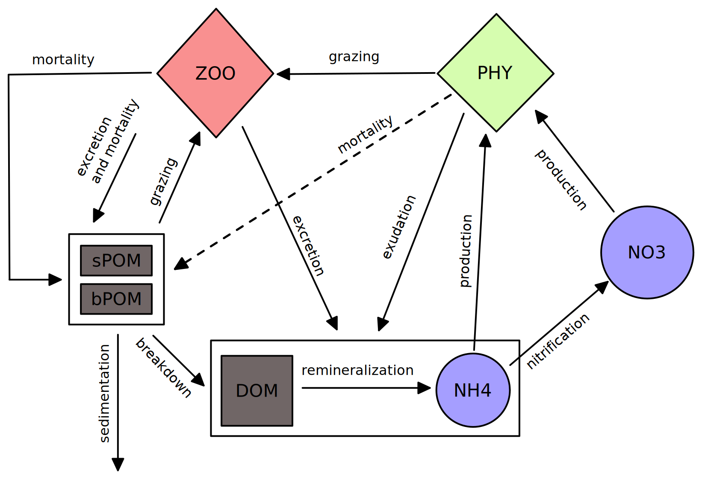

The Lodyc-DAMTP Ocean Biogeochemical Simulation Tools for Ecosystem and Resources (LOBSTER) model
LOBSTER is a medium complexity BGC model with seven core prognostic variables: phytoplankton, zooplankton, small and large detritus, nitrates, ammonia, and dissolved organic matter. LOBSTER was originally proposed by Lévy et al. (2005) and subsequently added to by Lévy et al. (2001), Resplandy et al. (2009), Karleskind et al. (2011), and Resplandy et al. (2012).

Additionally, this implementation of LOBSTER optionally models simple carbonate chemistry (DIC and Alkalinity), Oxygen, and variable redfield ratios for the now dissolved and particulate organic groups (which then allows carbon to be conserved). These are activated in the model setup, for example:
julia> using OceanBioME, Oceananigans
julia> grid = RectilinearGrid(size=(3, 3, 30), extent=(10, 10, 200));
julia> bgc_model = LOBSTER(; grid, carbonates = true)
Lodyc-DAMTP Ocean Biogeochemical Simulation Tools for Ecosystem and Resources (LOBSTER) model (Float64)
Optional components:
├── Carbonates ✅
├── Oxygen ❌
└── Variable Redfield Ratio ❌
Sinking Velocities:
├── sPOM: 0.0 to -3.47e-5 m/s
└── bPOM: 0.0 to -0.0023148148148148147 m/s
Light attenuation: Two-band light attenuation model (Float64)
Sediment: Nothing
Particles: NothingModel equations
Core components
When no additional components are activated the tracers $NO_3$, $NH_4$, $P$, $Z$, $sPOM$, $bPOM$, and $DOM$ evolve like:
\[\frac{\partial P}{\partial t} = (1-\gamma)\mu_P L_{PAR}\left(L_{NO_3} + L_{NH_4}\right)P - G_P - m_PP^2,\]
\[\frac{\partial Z}{\partial t} = a_z\left(G_P + G_{sPOM}\right) - m_ZZ^2 - \mu_ZZ,\]
\[\frac{\partial NO_3}{\partial t} = -\mu_PL_{PAR}L_{NO_3} + \mu_nNH_4,\]
\[\frac{\partial NH_4}{\partial t} = -\mu_PL_{PAR}L_{NH_4} - \mu_nNH_4 + \alpha_P\gamma\mu_P L_{PAR}\left(L_{NO_3} + L_{NH_4}\right)P + \alpha_Z\mu_ZZ + \alpha_{d}\mu_{sPOM}sPOM + \alpha_{d}\mu_{bPOM}bPOM + \mu_{DOM}DOM,\]
\[\frac{\partial sPOM}{\partial t} = f_s[\left(1-a_Z)\left(G_P + G_{sPOM}\right) + m_PP^2 + m_ZZ^2\right] - G_{sPOM} - \mu_{sPOM}sPOM - \frac{\partial}{\partial z}(sPOM w_{s}),\]
\[\frac{\partial bPOM}{\partial t} = (1-f_s)\left[(1-a_Z)\left(G_P + G_{sPOM}\right) + m_PP^2 + m_ZZ^2\right] - \mu_{bPOM}bPOM - \frac{\partial}{\partial z}(bPOM w_{b}),\]
\[\frac{\partial DOM}{\partial t} = (1-\alpha_P)\gamma\mu_P L_{PAR}\left(L_{NO_3} + L_{NH_4}\right)R_PP + (1-\alpha_Z)\mu_ZR_ZZ + (1-\alpha_D)\mu_{sPOM}sPOM + (1-\alpha_D)\mu_{bPOM}bPOM - \mu_{DOM}DOM.\]
Where:
\[L_{PAR} = 1 - e^{-PAR/k_{PAR}},\]
\[L_{NO_3} = \frac{NO_3}{NO_3 + k_{NO_3}}e^{-\psi NH_4},\]
\[L_{NH_4} = \frac{NH_4}{NH_4 + k_{NH_4}},\]
\[G_P = g_z\frac{\tilde{p}P}{k_z + \tilde{p}P + (1-\tilde{p})sPOM}Z,\]
\[G_{sPOM} = g_z\frac{(1-\tilde{p})sPOM}{k_z + \tilde{p}P + (1-\tilde{p})sPOM}Z.\]
Additionally, the $sPOM$ and $bPOM$ detritus components sink with constant sinking speed.
Carbonate chemistry
When the carbonate chemistry is activated additional tracers $DIC$ and $Alk$ evolve like:
\[\frac{\partial DIC}{\partial t} = \alpha_P\gamma\mu_P L_{PAR}\left(L_{NO_3} + L_{NH_4}\right)R_PP + \alpha_Z\mu_ZZR_Z + \alpha_D\mu_{sPOM}R_{O}sPOM + \alpha_D\mu_{bPOM}R_{O}bPOM + \mu_{DOM}R_{O}DOM - \mu_P L_{PAR}\left(L_{NO_3} + L_{NH_4}\right) R_P (1 + \rho_{CaCO_3}(1 - \gamma))P + G_P\eta R_P\rho_{CaCO_3},\]
\[\frac{\partial Alk}{\partial t} = \mu_P L_{PAR}L_{NO_3}P - 2\rho_{CaCO_3}\mu_P L_{PAR}\left(L_{NO_3} + L_{NH_4}\right)R_PP.\]
Oxygen chemistry
When the oxygen chemistry is activated additional tracer $O_2$ evolve like:
\[\frac{\partial O_2}{\partial t} = \mu_P L_{PAR}\left(L_{NO_3} + L_{NH_4}\right)R_{O_2}P - (R_{O_2} - R_{nit})\frac{\partial NH_4}{\partial t} - R_{O_2}\mu_nNH_4.\]
Variable Redfield
When the variable Redfield modification is activated the organic components are modified to evolve their nitrogen and carbon content separately. This means that the waste from non-Redfield models (e.g. loss from the kelp) can be accounted for.
In this case the organic components are split into nitrogen and carbon compartments, so the tracers $sPOM$, $bPOM$, and $DOM$ are replaced with $sPON$, $sPOC$, $bPON$, $bPOC$, $DON$, and $DOC$. The nitrogen compartments evolve as per the organic matter equations above (i.e. replacing each $XOM$ with $XON$), while the carbon compartments evolve like:
\[\frac{\partial sPOC}{\partial t} = f_s\left[(1-a_Z)\left(G_P + G_{sPOM}\right)R_Z + m_PP^2 + m_ZR_ZZ^2\right] - G_{sPON}R_Z - \mu_{sPOM}sPOC - \frac{\partial}{\partial z}(sPOC w_{s}),\]
\[\frac{\partial bPOC}{\partial t} = (1-f_s)\left[(1-a_Z)\left(G_P + G_{sPOM}\right)R_Z + m_PR_PP^2 + m_ZR_ZZ^2\right] + (G_P(1 - \eta) + m_PP^2)R_P\rho_{CaCO_3} - \mu_{bPOM}bPOC - \frac{\partial}{\partial z}(bPOC w_{b}),\]
\[\frac{\partial DOC}{\partial t} = (1-\alpha_P)\gamma\mu_P L_{PAR}\left(L_{NO_3} + L_{NH_4}\right)R_PP + (1-\alpha_Z)\mu_ZR_ZZ + (1-\alpha_D)\mu_{sPOM}sPOC + (1-\alpha_D)\mu_{bPOM}bPOC - \mu_{DOM}DOC.\]
Additionally, the $DIC$ and $Alk$ equations are modified to replace each $XOM \cdot R_O$ with the corresponding $XOC$.
Parameter variable names
| Symbol | Variable name | Units |
|---|---|---|
| $\tilde{p}$ | phytoplankton_preference | - |
| $g_z$ | maximum_grazing_rate | 1 / s |
| $k_z$ | grazing_half_saturation | mmol N / m³ |
| $k_{PAR}$ | light_half_saturation | W / m² |
| $\psi$ | nitrate_ammonia_inhibition | - |
| $k_{NO_3}$ | nitrate_half_saturation | mmol N / m³ |
| $k_{NH_4}$ | ammonia_half_saturation | mmol N / m³ |
| $\mu_P$ | maximum_phytoplankton_growthrate | 1 / s |
| $a_z$ | zooplankton_assimilation_fraction | - |
| $m_Z$ | zooplankton_mortality | 1 / s / mmol N/m³ |
| $\mu_z$ | zooplankton_excretion_rate | 1 / s |
| $m_P$ | phytoplankton_mortality | 1 / s |
| $\mu_{sPOM}$ | small_detritus_remineralisation_rate | 1 / s |
| $\mu_{bPOM}$ | large_detritus_remineralisation_rate | 1 / s |
| $\gamma$ | phytoplankton_exudation_fraction | - |
| $\mu_n$ | nitrifcaiton_rate | 1 / 2 |
| $\alpha_P$ | ammonia_fraction_of_exudate | - |
| $\alpha_Z$ | ammonia_fraction_of_excriment | - |
| $\alpha_d$ | ammonia_fraction_of_detritus | - |
| $R_P$ | phytoplankton_redfield | mmol C / mmol N |
| $R_O$ | organic_redfield | mmol C / mmol N |
| $R_{Chl:N}$ | phytoplankton_chlorophyll_ratio | mg Chl / mmol N |
| $\rho_{CaCO_3}$ | organic_carbon_calcate_ratio | mmol CaCO₃/ mmol C |
| $R_{O_2}$ | respiraiton_oxygen_nitrogen_ratio | mmol O / mmol N |
| $R_{nit}$ | nitrifcation_oxygen_nitrogen_ratio | mmol O / mmol N |
| $f_s$ | slow_sinking_mortality_fraction | - |
| $\mu_{DOM}$ | disolved_organic_breakdown_rate | 1 / s |
| $\eta$ | zooplankton_calcite_dissolution | - |
All default parameter values are given in Parameters; and a more thorough explanation of new terms will be included in a publication that is in prep.
Model conservations
In the core configuration nitrogen is conserved in the evolution of the equations (excluding external sources and sinking), i.e. $\partial_t NO_3 + \partial_t NH_4 + \partial_t P + \partial_t Z + \partial_t sPOM + \partial_t bPOM + \partial_t DOM = 0$. When the carbonate chemistry component is activated carbon is also conserved, i.e. $R(\partial_t P + \partial_t Z + \partial_t sPOM + \partial_t bPOM + \partial_t DOM) + \partial_t DIC = 0$. Trivially this is also the case when the variable Redfield component is also activated, i.e. $R(\partial_t P + \partial_t Z) + \partial_t sPOC + \partial_t bPOC + \partial_t DOC + \partial_t DIC = 0$.